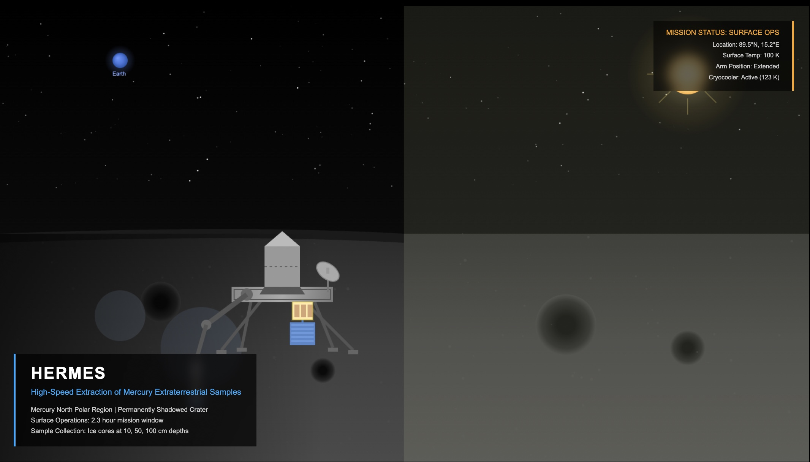

Projects
A curated selection of projects. Click any card for details.


HERMES Mercury Ice Sample Return Mission
Worked on mechanical design for a Mercury polar ice sample return mission, developing cryogenic storage systems, robotic manipulation architecture, and ascent vehicle integration for operation in permanently shadowed craters.
Label-Free Electrochemical Biosensor for SARS-CoV-2 Detection
Research intern worked on the development of an ultra-sensitive, label-free electrochemical biosensor using ACE2-functionalized graphene oxide electrodes for COVID-19 spike protein detection, achieving femtomolar sensitivity with potential for portable diagnostic applications.